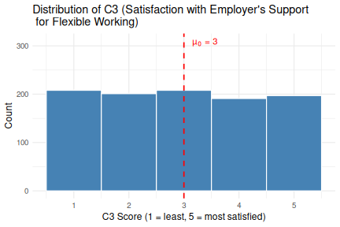

T-Tests in R
Last updated on 2026-05-15 | Edit this page
Overview
Questions
- When should I use a
t-testvs anANOVA? - How do I check whether my data meet the assumptions of these tests?
Objectives
- Distinguish between one-sample, independent-samples, and paired
t-tests - Run all three
t-testvariants inRand interpret their output - Check
t-testassumptions: normality and equal variances - Compute and interpret effect sizes:
Cohen's *d* - Report results clearly in a reproducible
R Notebook
Overview
This workshop and the next will cover the two most widely used parametric tests for comparing means of continuous variables:
-
T-Testscompare the mean of one or two groups to a reference value or to each other. -
ANOVA(Analysis of Variance) compares means across three or more groups simultaneously.
Both families of tests share a common logic: they ask whether the differences we observe between group means are larger than we would expect by chance alone.
Other materials
Dataset overview
This workshop uses a generated (made-up) dataset of 1,005
survey responses on flexible working and work-life balance. The
cleaned .rds file preserves all factor levels and ordered
factors set in the previous
lesson 5. Quantitative Data Analysis in R.
Survey schema (variables used in this workshop)
| Section | Variable | Type | Description |
|---|---|---|---|
| A (Demographics) | A1 – Gender | Factor (male, female) | What is your gender? |
| A2 – Age Group | Ordered Factor (18–34, 35–54, 55+) | What is your age? | |
| A3 – Education | Ordered Factor (primary, secondary, tertiary+) | Highest level of education? | |
| A4 – Income | Ordered Factor (low, middle, high) | Annual income level? | |
| A6 – Area Type | Factor (Rural, Urban) | Urban or rural residence? | |
| C (Satisfaction) | C1 | Integer (1–5) | Satisfaction with flexible working arrangements |
| C2 | Integer (1–5) | Extent flex working improves work-life balance | |
| C3 | Integer (1–5) | Employer support for flexible working in practice | |
| D (Commute) | D1 | Numeric | Commute time to work (minutes) |
| D2 | Numeric | Commute distance (km) |
Likert scale data vs categorical data
In practice, treating 5-point (1-5) Likert items such as
variables C1, C2 and C3 as
continuous is extremely common in the analysis or survey data
(especially when sample sizes are large), because it unlocks parametric
tests like t-tests and ANOVA that are more
powerful than their ordinal alternatives.
The key assumption is that the distance between points is meaningful and approximately equal: a 2 is “one unit more” than a 1, a 3 is “one unit more” than a 2, and so on. That equal-interval property allows you to compute a meaningful mean (e.g., “the average satisfaction was 3.09”), standard deviation, and differences between groups.
Categorical variables such as E1 uses labels: Strongly
dissatisfied, Dissatisfied, Neutral, Satisfied, Strongly satisfied.
These are ordered; we know Satisfied > Neutral, but there’s no
defensible claim that the gap between Neutral and Satisfied is the same
size as the gap between Dissatisfied and Neutral.
Because the distances between categories are unknown, you can’t take
a meaningful mean. Saying “the average satisfaction was 3.2 on the
Strongly dissatisfied–Strongly satisfied scale” doesn’t make sense the
way it does for a numbered scale. So E1 is classified as an
ordered factor and analysed with tests suited to ordinal or categorical
data (Chi-square, ordinal regression, etc.).
Set up
Start by opening your intro_r RStudio
project and start a new R Notebook
(File → New File → R Notebook). Save it as
t_tests_anova.Rmd in your scripts folder.
Ensure your global environment is empty! You can also
sweep’your global environment by clicking the
broom icon.
When you open a new R Notebook, some explanatory text is
provided. This can be deleted so you can enter your own text and
code.
Load packages and data
Download packages (if needed) and load libraries. We’ll be using the
rstatix and effectsize packages for the first
time, so they will need to be installed.
R
for (pkg in c("tidyverse", "here", "rstatix", "effectsize")) {
if (!requireNamespace(pkg, quietly = TRUE)) install.packages(pkg)
}
OUTPUT
- Querying repositories for available source packages ... Done!
The following package(s) will be installed:
- abind [1.4-8]
- car [3.1-5]
- carData [3.0-6]
- colorspace [2.1-2]
- corrplot [0.95]
- cowplot [1.2.0]
- Deriv [4.2.0]
- doBy [4.7.1]
- forecast [9.0.2]
- Formula [1.2-5]
- fracdiff [1.5-4]
- lme4 [2.0-1]
- lmtest [0.9-40]
- MatrixModels [0.5-4]
- microbenchmark [1.5.0]
- minqa [1.2.8]
- nloptr [2.2.1]
- numDeriv [2016.8-1.1]
- pbkrtest [0.5.5]
- quantreg [6.1]
- rbibutils [2.4.1]
- RcppEigen [0.3.4.0.2]
- Rdpack [2.6.6]
- reformulas [0.4.4]
- rstatix [0.7.3]
- SparseM [1.84-2]
- timeDate [4052.112]
- urca [1.3-4]
- zoo [1.8-15]
These packages will be installed into "/__w/irim-r-workshops/irim-r-workshops/renv/profiles/lesson-requirements/renv/library/linux-ubuntu-noble/R-4.5/x86_64-pc-linux-gnu".
# Downloading packages -------------------------------------------------------
[32m✔[0m abind 1.4-8 [22 kB in 0.31s]
[32m✔[0m microbenchmark 1.5.0 [62 kB in 0.33s]
[32m✔[0m numDeriv 2016.8-1.1 [76 kB in 0.33s]
[32m✔[0m reformulas 0.4.4 [85 kB in 0.33s]
[32m✔[0m pbkrtest 0.5.5 [77 kB in 0.34s]
[32m✔[0m Formula 1.2-5 [128 kB in 0.34s]
[32m✔[0m Rdpack 2.6.6 [379 kB in 0.38s]
[32m✔[0m forecast 9.0.2 [591 kB in 0.39s]
[32m✔[0m rstatix 0.7.3 [417 kB in 0.4s]
[32m✔[0m MatrixModels 0.5-4 [25 kB in 84s]
[32m✔[0m SparseM 1.84-2 [553 kB in 0.4s]
[32m✔[0m rbibutils 2.4.1 [1.2 MB in 0.43s]
[32m✔[0m RcppEigen 0.3.4.0.2 [1.8 MB in 0.43s]
[32m✔[0m minqa 1.2.8 [55 kB in 0.11s]
[32m✔[0m cowplot 1.2.0 [1.6 MB in 0.44s]
[32m✔[0m lme4 2.0-1 [3.7 MB in 0.46s]
[32m✔[0m Deriv 4.2.0 [39 kB in 0.14s]
[32m✔[0m doBy 4.7.1 [4.5 MB in 0.48s]
[32m✔[0m lmtest 0.9-40 [230 kB in 0.11s]
[32m✔[0m zoo 1.8-15 [806 kB in 0.17s]
[32m✔[0m corrplot 0.95 [3.7 MB in 0.51s]
[32m✔[0m car 3.1-5 [379 kB in 0.14s]
[32m✔[0m fracdiff 1.5-4 [60 kB in 93s]
[32m✔[0m nloptr 2.2.1 [2.3 MB in 0.2s]
[32m✔[0m timeDate 4052.112 [367 kB in 0.13s]
[32m✔[0m colorspace 2.1-2 [2.1 MB in 0.2s]
[32m✔[0m quantreg 6.1 [925 kB in 0.1s]
[32m✔[0m urca 1.3-4 [681 kB in 0.15s]
[32m✔[0m carData 3.0-6 [996 kB in 0.14s]
Successfully downloaded 29 packages in 0.83 seconds.
# Installing packages --------------------------------------------------------
[32m✔[0m abind 1.4-8 [built from source in 6.6s]
[32m✔[0m carData 3.0-6 [built from source in 7.9s]
[32m✔[0m corrplot 0.95 [built from source in 8.3s]
[32m✔[0m Formula 1.2-5 [built from source in 5.4s]
[32m✔[0m Deriv 4.2.0 [built from source in 11s]
[32m✔[0m fracdiff 1.5-4 [built from source in 12s]
[32m✔[0m colorspace 2.1-2 [built from source in 28s]
[32m✔[0m microbenchmark 1.5.0 [built from source in 13s]
[32m✔[0m MatrixModels 0.5-4 [built from source in 23s]
[32m✔[0m numDeriv 2016.8-1.1 [built from source in 5.7s]
[32m✔[0m cowplot 1.2.0 [built from source in 48s]
[32m✔[0m minqa 1.2.8 [built from source in 33s]
[32m✔[0m SparseM 1.84-2 [built from source in 36s]
[32m✔[0m rbibutils 2.4.1 [built from source in 1.1m]
[32m✔[0m nloptr 2.2.1 [built from source in 1.6m]
[32m✔[0m timeDate 4052.112 [built from source in 43s]
[32m✔[0m urca 1.3-4 [built from source in 27s]
[32m✔[0m Rdpack 2.6.6 [built from source in 14s]
[32m✔[0m zoo 1.8-15 [built from source in 21s]
[32m✔[0m lmtest 0.9-40 [built from source in 12s]
[32m✔[0m reformulas 0.4.4 [built from source in 18s]
[32m✔[0m quantreg 6.1 [built from source in 51s]
[32m✔[0m RcppEigen 0.3.4.0.2 [built from source in 2.4m]
[32m✔[0m forecast 9.0.2 [built from source in 1.6m]
[32m✔[0m lme4 2.0-1 [built from source in 1.2m]
[32m✔[0m doBy 4.7.1 [built from source in 14s]
[32m✔[0m pbkrtest 0.5.5 [built from source in 5.6s]
[32m✔[0m car 3.1-5 [built from source in 8.1s]
[32m✔[0m rstatix 0.7.3 [built from source in 4.8s]
Successfully installed 29 packages in 300 seconds.
The following package(s) will be installed:
- bayestestR [0.17.0]
- datawizard [1.3.1]
- effectsize [1.0.2]
- insight [1.5.0]
- parameters [0.29.0]
- performance [0.16.0]
These packages will be installed into "/__w/irim-r-workshops/irim-r-workshops/renv/profiles/lesson-requirements/renv/library/linux-ubuntu-noble/R-4.5/x86_64-pc-linux-gnu".
# Downloading packages -------------------------------------------------------
[32m✔[0m datawizard 1.3.1 [449 kB in 0.4s]
[32m✔[0m effectsize 1.0.2 [396 kB in 0.4s]
[32m✔[0m bayestestR 0.17.0 [431 kB in 0.4s]
[32m✔[0m parameters 0.29.0 [690 kB in 0.42s]
[32m✔[0m insight 1.5.0 [1.1 MB in 0.44s]
[32m✔[0m performance 0.16.0 [2.2 MB in 0.47s]
Successfully downloaded 6 packages in 0.75 seconds.
# Installing packages --------------------------------------------------------
[32m✔[0m insight 1.5.0 [built from source in 14s]
[32m✔[0m datawizard 1.3.1 [built from source in 5.5s]
[32m✔[0m bayestestR 0.17.0 [built from source in 5.8s]
[32m✔[0m performance 0.16.0 [built from source in 16s]
[32m✔[0m parameters 0.29.0 [built from source in 20s]
[32m✔[0m effectsize 1.0.2 [built from source in 4.0s]
Successfully installed 6 packages in 50 seconds.R
library(tidyverse)
library(here)
library(effectsize) # for repeated_measures_d
library(rstatix) # tidy statistical tests
Read in the cleaned survey data that was processed in the previous workshop.
Download the data first if you need to.
R
download.file("https://raw.githubusercontent.com/IRIM-Mongolia/irim-r-workshops/main/episodes/data/cleaned/generated_survey_data_clean.rds", here("data/cleaned/generated_survey_data_clean.rds"), mode = "wb")
R
survey <- readRDS(here("data", "cleaned", "generated_survey_data_clean.rds"))
survey
OUTPUT
# A tibble: 1,005 × 28
A1 A2 A3 A4 A5 A6 B1 B1_1 B1_2 B1_3 B1_4 B1_5 B2
<fct> <ord> <ord> <ord> <fct> <fct> <chr> <lgl> <lgl> <lgl> <lgl> <lgl> <chr>
1 male 18-34 seco… low regi… Urban <NA> FALSE FALSE FALSE FALSE FALSE 1 4 7
2 male 35-54 seco… midd… regi… Rural 2 4 5 FALSE TRUE FALSE TRUE TRUE 1 4 6
3 fema… 35-54 tert… low regi… Rural 2 3 4 FALSE TRUE TRUE TRUE FALSE 3 6 7
4 male 18-34 tert… low regi… Urban 5 FALSE FALSE FALSE FALSE TRUE 3 5 8
5 male 35-54 seco… high regi… Rural 5 FALSE FALSE FALSE FALSE TRUE 2 5 6
6 fema… 18-34 tert… high regi… Urban 1 3 5 TRUE FALSE TRUE FALSE TRUE 3 6
7 male 35-54 seco… high regi… Urban 2 4 5 FALSE TRUE FALSE TRUE TRUE 2 6 7
8 fema… 18-34 tert… midd… regi… Rural 3 4 5 FALSE FALSE TRUE TRUE TRUE 6 7 8
9 male 18-34 tert… low regi… Urban 2 4 FALSE TRUE FALSE TRUE FALSE 2 5 8
10 male 18-34 prim… midd… regi… Urban 5 FALSE FALSE FALSE FALSE TRUE 5 8
# ℹ 995 more rows
# ℹ 15 more variables: B2_1 <lgl>, B2_2 <lgl>, B2_3 <lgl>, B2_4 <lgl>,
# B2_5 <lgl>, B2_6 <lgl>, B2_7 <lgl>, B2_8 <lgl>, C1 <dbl>, C2 <dbl>,
# C3 <dbl>, D1 <dbl>, D2 <dbl>, E1 <ord>, E2 <chr>Choosing the right test
Before running any test, you need to answer three questions:
-
How many groups am I comparing?
- One group vs a fixed value →
one-sample t-test - Two groups →
independent-samplesorpaired t-test - Three or more groups →
ANOVA
- One group vs a fixed value →
-
Are the observations paired (matched)?
- Paired (same respondent measured twice, or matched pairs) →
paired t-test - Independent (different respondents in each group) →
independent t-testorANOVA
- Paired (same respondent measured twice, or matched pairs) →
-
Are the assumptions met? (normality, equal
variances)
- If not, consider non-parametric alternatives such as
WilcoxonorMann-Whitney U-Test.
- If not, consider non-parametric alternatives such as
| Research question | Test |
|---|---|
| Is mean satisfaction (C1) different from the scale midpoint of 3? | One-sample t-test |
| Do men and women score differently on C1? | Independent-samples t-test |
| Does satisfaction (C1) differ from work-life balance improvement (C2) within the same respondent? | Paired t-test |
| Does commute time (D1) differ across three age groups? | One-way ANOVA |
| Does satisfaction (C1) depend on both gender and income? | Two-way ANOVA |
T-Tests
The one-sample t-test
The one-sample t-test tests whether the
mean of a single continuous variable differs significantly from a
specified reference value (mu or µ₀).
Research question: Is the mean satisfaction score for flexible working arrangements (C1) significantly different from the scale midpoint of 3?
The scale midpoint of 3 represents a neutral response (“neither satisfied nor dissatisfied”). If the mean is significantly above or below 3, it indicates a consistent directional lean across the sample.
Assumptions
- Observations are independent (each row is one respondent).
- The variable is continuous (interval or ratio scale).
- The variable is approximately normally distributed or the sample is large (n > 30 by the Central Limit Theorem). With n = 1005, this is met.
Exploratory plot
Always visualise your data before running a test to inspect the data.
R
survey %>%
ggplot(aes(x = C1)) +
geom_histogram(binwidth = 1, fill = "steelblue", colour = "white") +
geom_vline(xintercept = 3, linetype = "dashed", colour = "red",
linewidth = 0.8) +
annotate("text", x = 3.15, y = 310, label = "µ₀ = 3", colour = "red",
hjust = 0, size = 4) +
labs(title = "Distribution of C1 (Satisfaction with Flexible Working)",
x = "C1 Score (1 = least, 5 = most satisfied)",
y = "Count") +
theme_minimal(base_size = 12)

The distribution looks roughly symmetric around 3, but the mean may differ slightly. Let us test this formally.
Running the t-test
We’ll use the function t_test from the
rstatix package, which works well with the
tidyverse.
The ~ 1 means “no grouping variable”. We are testing
C1 against a fixed value (mu = 3) rather than
comparing it across groups.
R
survey %>%
t_test(C1 ~ 1, mu = 3, detailed = TRUE)
OUTPUT
# A tibble: 1 × 12
estimate .y. group1 group2 n statistic p df conf.low conf.high
* <dbl> <chr> <chr> <chr> <int> <dbl> <dbl> <dbl> <dbl> <dbl>
1 3.09 C1 1 null mo… 1005 2.08 0.0375 1004 3.01 3.18
# ℹ 2 more variables: method <chr>, alternative <chr>Reading t-test output
The output contains:
-
estimate: the observed sample mean of the data,
this is the value being tested against
mu. - statistic: the t-statistic. Larger absolute values suggest stronger evidence against H₀.
- df: degrees of freedom (n − 1 for a one-sample test), used to determine the critical value of t.
- p: the p-value/probability of observing a t-statistic this extreme or more extreme if H₀ (µ = 3) were true.
-
conf.low / conf.high: the lower and upper bounds of
the 95% confidence interval; the plausible range for the true population
mean. If this interval does not include
mu= x, the result is significant at p < 0.05. -
mu: the reference value being tested against. -
alternative: the direction of the test; “two.sided”
means you are testing for any difference from
mu, rather than specifically above or below it.
The result is t(1004) = 2.08, p = 0.0375. With p < 0.05, we reject the null hypothesis and conclude the mean C1 score is significantly different from 3. The 95% confidence interval [3.005, 3.18] sits entirely above 3, confirming a small but statistically reliable positive lean.
Effect size: Cohen's *d*
We’ll use the function cohens_d from the
rstatix package to compute the effect size for the t-test.
Cohen's d is calculated as the difference between means or
mean minus mu divided by the estimated standardized
deviation.
Cohen's *d* measures how large a difference is in
practical terms, not just whether it’s statistically significant. It is
expressed as the number of standard deviations separating the two group
means.
| Cohen’s d | Interpretation |
|---|---|
| < 0.2 | Negligible / very small |
| 0.2 | Small |
| 0.5 | Medium |
| 0.8 | Large |
R
survey %>%
cohens_d(C1 ~ 1, mu = 3)
OUTPUT
# A tibble: 1 × 6
.y. group1 group2 effsize n magnitude
* <chr> <chr> <chr> <dbl> <int> <ord>
1 C1 1 null model 0.0657 1005 negligibleCohen's *d* < 0.1 indicates a
negligible effect. Statistical significance here is
partly a consequence of the large sample size, not a practically
important deviation. Always report effect sizes alongside p-values.
An example sentence:
“On average, respondents reported slightly higher than neutral satisfaction with their flexible working arrangements (mean score 3.09 out of 5). This positive lean is statistically reliable and unlikely to be a chance finding (t(1004) = 2.08, p = 0.0375). We can be 95% confident the true average across the population falls between 3.005 and 3.18, meaning satisfaction is consistently, if only marginally, above the midpoint.
However, the practical significance of this difference is negligible
(Cohen's *d*= 0.07), meaning that while the result is
statistically detectable, the deviation from neutral is too small to be
meaningful in practice.”
The independent-samples t-test
The independent-samples t-test
(unpaired t-test) compares the means of a continuous
variable across two independent groups. Let’s
investigate if there are differences between the satisfaction reported
by men and women to the question C1.
Research question: Do male and female respondents differ in their satisfaction with flexible working arrangements (C1)?
Assumptions
- The two groups are independent (a respondent appears in only one group).
- The continuous variable is approximately normally distributed within each group, or each group has n > 30 (both groups here are large).
- Equal variances (homoscedasticity): we will check this with
Levene'stest.
Check equal variances
Levene's test checks whether two or more groups have
similar spread (variance) in their data, which is a required assumption
for t-tests and ANOVA. If the test is
non-significant (p > 0.05), the variances are similar
enough to proceed with the standard test. If the test is significant
(p ≤ 0.05), the groups have unequal spread and you should
switch to Welch's t-test or Welch's ANOVA,
which don’t require equal variances
R
survey %>%
levene_test(C1 ~ A1)
OUTPUT
# A tibble: 1 × 4
df1 df2 statistic p
<int> <int> <dbl> <dbl>
1 1 1003 0.00147 0.969Levene’s test produces F and p values. If
p > 0.05, we retain the assumption of equal variances
and use the classic Student’s t-test. If p ≤ 0.05,
variances are unequal and we use Welch’s t-test
(var.equal = FALSE), which does not assume equal variances.
Note, t.test in base R and t_test
in rstatix default to Welch's t-test. We can
use the Student's t-test by including
var.equal = TRUE when running the test.
Exploratory plot
We’ll use a box-plot to plot the distribution of values for males and females.
A boxplot displays the distribution of a continuous variable through five summary statistics. The box spans the interquartile range (IQR) (the middle 50% of the data) with a line inside marking the median. The whiskers extend to the smallest and largest values within 1.5 times the IQR from the box edges, and any points beyond the whiskers are plotted individually as outliers. You can also plot the mean value on the graph as well.
R
survey %>%
ggplot(aes(x = A1, y = C1, fill = A1)) +
geom_boxplot(alpha = 0.7, outlier.shape = NA) +
geom_jitter(width = 0.15, size = 0.7, alpha = 0.3, colour = "grey30") +
stat_summary(fun = mean, geom = "point", shape = 18,
size = 4, colour = "black") +
labs(title = "C1 Satisfaction by Gender",
x = "Gender (A1)", y = "C1 Score") +
scale_fill_manual(values = c("steelblue", "coral")) +
theme_minimal(base_size = 12) +
theme(legend.position = "none")

The diamond shows the mean values of the to groups. From the boxplot, a clear difference between the two genders is visible.
Running the test
Running the test is similar to the one-sample t-test,
except we now include the grouping variable A1. The output
is also similar, but with the addition of some new estimate columns:
- estimate: the difference in means between the two groups (G1 - G1); this is the raw gap between the observed sample means of the two groups.
- estimate1: the observed sample mean for the first group.
- estimate2: the observed sample mean for the second group.
R
survey %>%
t_test(C1 ~ A1, var.equal = TRUE, detailed = TRUE) # when var.equal = FALSE, Welch's t-test is used
OUTPUT
# A tibble: 1 × 15
estimate estimate1 estimate2 .y. group1 group2 n1 n2 statistic
* <dbl> <dbl> <dbl> <chr> <chr> <chr> <int> <int> <dbl>
1 1.21 3.60 2.39 C1 female male 583 422 14.8
# ℹ 6 more variables: p <dbl>, df <dbl>, conf.low <dbl>, conf.high <dbl>,
# method <chr>, alternative <chr>The result is t(1003) = 14.77, p < 0.001. Female respondents score substantially higher on C1 (mean = 3.60) than male respondents (mean = 2.39).
Effect size
R
survey %>%
cohens_d(C1 ~ A1)
OUTPUT
# A tibble: 1 × 7
.y. group1 group2 effsize n1 n2 magnitude
* <chr> <chr> <chr> <dbl> <int> <int> <ord>
1 C1 female male 0.944 583 422 large Cohen's *d* = 0.94 is a large effect:
the gender difference in satisfaction represents nearly one full
standard deviation. This is substantively meaningful, not just
statistically significant.
Reporting checklist for independent t-tests
- Research question and grouping variable
- Group means and SDs
- Levene’s test result (and whether Welch or Student was used)
- Test statistic and degrees of freedom: t(df) = X.XX
- p-value (exact, or < .001)
- 95% confidence interval on the difference
- Cohen’s d with interpretation
Summary statistics
Unfortunately, t_test() from rstatix
doesn’t include the standard deviation in its output by default, so
we’ll run the summary statistics separately.
R
# summary statistics including SD
survey %>%
group_by(A1) %>%
summarise(
n = n(),
mean = round(mean(C1, na.rm = TRUE), 3),
sd = round(sd(C1, na.rm = TRUE), 3)
)
OUTPUT
# A tibble: 2 × 4
A1 n mean sd
<fct> <int> <dbl> <dbl>
1 female 583 3.60 1.28
2 male 422 2.39 1.27Example sentence: “Female respondents reported
significantly higher satisfaction with their flexible working
arrangements (mean = 3.60, sd = 1.28) compared to male respondents (mean
= 2.39, sd = 1.28), a difference of 1.21 points on the 5-point scale.
This gap is highly statistically significant (t(1003) = 14.77, p <
0.001, 95% CI [1.05, 1.37]) and represents a large practical effect
(Cohen's d = 0.94). Levene's test confirmed
that the two groups had equal variance (p = 0.969), so the
Student's t-test was used.”
The paired t-test
The paired t-test (also called the dependent-samples or repeated-measures t-test) compares means of two related measurements: either the same variable at two time points, or two variables measured on the same participants.
Research question: Do respondents score C1 (satisfaction with flexible working arrangements) differently from C2 (extent flexible working improves work-life balance)?
Both C1 and C2 are measured on the same 1-to-5 scale by the same respondents. A paired test correctly accounts for the correlation between these measurements within each person.
Why not an independent t-test?
Using an independent t-test here would ignore that both scores come from the same person. Pairing removes the between-person variance and gives a more precise and powerful test of the within-person difference.
Assumptions
- Observations are paired: each row contributes one value to both C1 and C2 (the same respondent answered both questions).
- The differences between paired values (C2 − C1) are approximately normally distributed, or the sample is large enough for the Central Limit Theorem to apply (n = 1,005 here).
- The pairs are independent of each other: one respondent’s answers do not influence another’s.
Exploratory plot
We’ll use a violin-plot to plot the distribution of values for responses to C1 and C2. A violin plot is used here because C1 and C2 are discrete 1–5 scale variables, meaning a boxplot alone would be misleading: with only five possible values, the box and whiskers can look identical between two variables even when their distributions are quite different.
The violin adds the full shape of the distribution, showing where responses cluster (wider = more respondents at that score), so you can immediately see whether responses pile up at the extremes or concentrate around the midpoint. The boxplot is layered on top to retain the familiar median and IQR summary, and the diamond marks the mean, giving you three layers of information in one plot.
R
survey %>%
select(C1, C2) %>%
pivot_longer(everything(), names_to = "Scale", values_to = "Score") %>%
ggplot(aes(x = Scale, y = Score, fill = Scale)) +
geom_violin(alpha = 0.5, trim = FALSE) +
geom_boxplot(width = 0.15, outlier.shape = NA, colour = "black") +
stat_summary(fun = mean, geom = "point", shape = 18,
size = 4, colour = "black") +
labs(title = "C1 vs C2: Paired Satisfaction Scores",
x = NULL, y = "Score (1–5)") +
scale_fill_manual(values = c("steelblue", "coral")) +
theme_minimal(base_size = 12) +
theme(legend.position = "none")

Running the test
To run a paired t-test using rstatix, the
data needs to be reshaped first to compare two continuous variables from
the same respondent.
Including the argument paired = TRUE ensures a
paired t-test is run.
R
survey %>%
select(C1, C2) %>%
mutate(id = row_number()) %>%
pivot_longer(c(C1, C2), names_to = "scale", values_to = "score") %>%
t_test(score ~ scale, paired = TRUE, detailed = TRUE)
OUTPUT
# A tibble: 1 × 13
estimate .y. group1 group2 n1 n2 statistic p df conf.low
* <dbl> <chr> <chr> <chr> <int> <int> <dbl> <dbl> <dbl> <dbl>
1 -0.209 score C1 C2 1005 1005 -3.90 0.000104 1004 -0.314
# ℹ 3 more variables: conf.high <dbl>, method <chr>, alternative <chr>Or, we can use the t.test function from the base
R stats package (no need to load additional
libraries, or reshape data).
R
t.test(survey$C1, survey$C2, paired = TRUE)
OUTPUT
Paired t-test
data: survey$C1 and survey$C2
t = -3.8962, df = 1004, p-value = 0.0001042
alternative hypothesis: true mean difference is not equal to 0
95 percent confidence interval:
-0.3141949 -0.1037155
sample estimates:
mean difference
-0.2089552 Summary statistics
R
survey %>%
summarise(
mean_C1 = round(mean(C1, na.rm = TRUE), 3),
mean_C2 = round(mean(C2, na.rm = TRUE), 3),
mean_diff = round(mean(C2 - C1, na.rm = TRUE), 3),
sd_diff = round(sd(C2 - C1, na.rm = TRUE), 3)
)
OUTPUT
# A tibble: 1 × 4
mean_C1 mean_C2 mean_diff sd_diff
<dbl> <dbl> <dbl> <dbl>
1 3.09 3.30 0.209 1.7The result is t(1004) = −3.90, p < 0.001. Respondents rate C2 (mean = 3.30) significantly higher than C1 (mean = 3.09) on average, with a mean difference of -0.21 points. While statistically significant, this is a small effect.
Effect size
R
survey %>%
pivot_longer(c(C1, C2), names_to = "scale", values_to = "score") %>%
cohens_d(score ~ scale, paired = TRUE)
OUTPUT
# A tibble: 1 × 7
.y. group1 group2 effsize n1 n2 magnitude
* <chr> <chr> <chr> <dbl> <int> <int> <ord>
1 score C1 C2 -0.123 1005 1005 negligibleFor paired data, we can also use the
repeated_measures_d() function from the
efectsize package. It offers offers multiple
standardisation methods (rm, av, z) that account for the dependency
between measurements, while the cohens_d function with
paired = TRUE only has one option (the standard deviation
of the differences as the standardiser, which is closest to d(rm) in the
effectsize package, but not identical).
- d (rm) — adjusts for the correlation between the paired scores,
which typically produces a slightly larger effect size than standard
Cohen's dbecause it accounts for the fact that paired measurements are not independent - d (av) — uses the average of the two standard deviations rather than the pooled SD, which is more appropriate when the two variables have different spreads
- d (z) — standardises using the population SD, useful when comparing to external benchmarks
R
repeated_measures_d(Pair(C1, C2) ~ 1, data = survey, method = "rm")
OUTPUT
d (rm) | 95% CI
-----------------------
-0.16 | [-0.23, -0.08]
- Adjusted for small sample bias.The *d[rm]* = -0.16 or cohens d = -0.129 is a
negligible effect. Statistical significance here is partly a consequence
of the large sample size, not a practically important deviation.
Example sentence:
On average, respondents scored C2 slightly higher than C1 (mean C2 = 3.30 vs mean C1 = 3.09), a mean difference of 0.21 points. This difference is statistically significant (t(1004) = −3.90, p < 0.001, 95% CI [−0.31, −0.10]), indicating that respondents consistently perceive flexible working as improving their work-life balance to a slightly greater degree than they are satisfied with their current arrangements.
However, the practical significance of this difference is small
(d[rm]= -0.16), and the standard deviation of the
within-person differences was wide (sd = 1.70), suggesting considerable
variation in how individuals responded across the two questions. While
the finding is reliable at the population level, the gap between the two
scores is unlikely to be noticeable or meaningful in day-to-day
terms.
Exercises
Exercise 1
Test whether the mean of C3 (employer support for flexible working)
is significantly different from 3 (the neutral point). Report the mean
score, t-statistic, p-value, 95% CI, and Cohen's *d*. What
do you conclude?
R
survey %>%
ggplot(aes(x = C3)) +
geom_histogram(binwidth = 1, fill = "steelblue", colour = "white") +
geom_vline(xintercept = 3, linetype = "dashed", colour = "red",
linewidth = 0.8) +
annotate("text", x = 3.15, y = 310, label = "µ₀ = 3", colour = "red",
hjust = 0, size = 4) +
labs(title = "Distribution of C3 (Satisfaction with Employer's Support \n for Flexible Working)",
x = "C3 Score (1 = least, 5 = most satisfied)",
y = "Count") +
theme_minimal(base_size = 12)

R
survey %>%
t_test(C3 ~ 1, mu = 3, detailed = TRUE)
OUTPUT
# A tibble: 1 × 12
estimate .y. group1 group2 n statistic p df conf.low conf.high
* <dbl> <chr> <chr> <chr> <int> <dbl> <dbl> <dbl> <dbl> <dbl>
1 2.97 C3 1 null mod… 1005 -0.713 0.476 1004 2.88 3.06
# ℹ 2 more variables: method <chr>, alternative <chr>R
survey %>%
cohens_d(C3 ~ 1, mu=3)
OUTPUT
# A tibble: 1 × 6
.y. group1 group2 effsize n magnitude
* <chr> <chr> <chr> <dbl> <int> <ord>
1 C3 1 null model -0.0225 1005 negligibleOn average, respondents reported neutral satisfaction with their
employer’s support for flexible working arrangements (mean score 2.97
out of 5, t(1004) = -0.713, p = 0.476). We can be 95% confident the true
average across the population falls between 2.88 and 3.06, meaning
satisfaction is consistently, at the midpoint. This is also supported by
the negligible effect reported by Cohen's *d* (-0.022).
Exercise 2
Compare commute time in minutes (D1) between male and female
respondents (A1). Check Levene’s test, run the appropriate t-test, and
compute Cohen's *d*. Is the difference practically
meaningful?
R
survey %>%
levene_test(D1 ~ A1)
OUTPUT
# A tibble: 1 × 4
df1 df2 statistic p
<int> <int> <dbl> <dbl>
1 1 1003 4.33 0.0376As p > 0.05, we retain the assumption of equal variances and use the classic Student’s t-test.
R
survey %>%
t_test(D1 ~ A1, var.equal = TRUE, detailed = TRUE) # when var.equal = FALSE, Welch's t-test is used
OUTPUT
# A tibble: 1 × 15
estimate estimate1 estimate2 .y. group1 group2 n1 n2 statistic p
* <dbl> <dbl> <dbl> <chr> <chr> <chr> <int> <int> <dbl> <dbl>
1 3.53 72.8 69.2 D1 female male 583 422 2.02 0.0434
# ℹ 5 more variables: df <dbl>, conf.low <dbl>, conf.high <dbl>, method <chr>,
# alternative <chr>R
survey %>%
cohens_d(D1 ~ A1)
OUTPUT
# A tibble: 1 × 7
.y. group1 group2 effsize n1 n2 magnitude
* <chr> <chr> <chr> <dbl> <int> <int> <ord>
1 D1 female male 0.128 583 422 negligibleR
# summary statistics including SD
survey %>%
group_by(A1) %>%
summarise(
n = n(),
mean = round(mean(D1, na.rm = TRUE), 3),
sd = round(sd(D1, na.rm = TRUE), 3)
)
OUTPUT
# A tibble: 2 × 4
A1 n mean sd
<fct> <int> <dbl> <dbl>
1 female 583 72.8 26.5
2 male 422 69.2 28.5“Female respondents reported slightly higher commute times to work
(mean = 72.6 minutes, sd = 26.46) compared to male respondents (mean =
69.22, sd = 28.45), a difference of 3.53 minutes. This difference, while
statistically significant (t(1003) = 2.02, p = 0.04, 95% CI [0.10,
6.96]), represents a negligible practical effect (Cohen's d
= 0.13). Levene's test confirmed that the two groups had
equal variance (p = 0.969), so the Student's t-test was
used.”